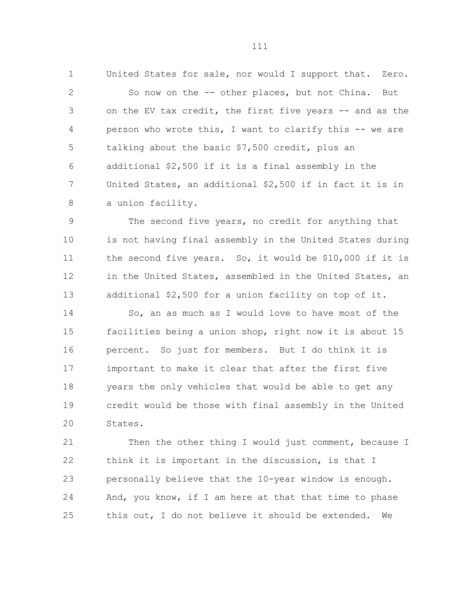

2021년 선행안의 작성자 진술을 찾았습니다.
“as the person who wrote this,
I want to clarify this”스테이브나우 · 2021.5.26 · 속기록 111쪽
작성자 발언과 문맥 확인INFLATION REDUCTION ACT · ELECTRIC VEHICLES
미국 조립 요건의 도입, 북미로의 확대, 시행 시점의 단축을 각각 추적합니다.
확인된 문구와 발언, 아직 입증되지 않은 협상 과정을 구분했습니다.
LEGISLATIVE FLOW · 2021–2022
단계를 선택하면 변경 내용과 근거가 펼쳐집니다.
지역 확대와 시행일 변경은 확인됩니다. 각 변경의 요구자·작성자와 실제 협상 날짜는 아직 미확정입니다.
제정된 IRA의 실제 변경이 아니라 사후 유예 법안입니다. E20 근거 보기
읽는 방법: 화살표는 확보한 문서 사이의 비교 순서입니다. 시간 간격은 비례하지 않으며, 모든 선행안이 법률로 통과됐다는 뜻이 아닙니다. 전체 8개 버전은 아래 조문 비교표에서 확인할 수 있습니다.
“as the person who wrote this,
I want to clarify this”스테이브나우 · 2021.5.26 · 속기록 111쪽
작성자 발언과 문맥 확인북미 확대와 유예 단축은 늦어도 7월 27일 IRA 초안에 함께 나타납니다. 이를 직접 요구·작성한 개인은 현재 근거로 확정하지 않았습니다.
01 / TEXTUAL CHANGE
지역과 날짜뿐 아니라 적용 기준이 ‘판매’인지 ‘사용 개시’인지도 구분해야 합니다.
| 문서 | 조립 지역 | 의무 적용 | 변화와 근거 |
|---|---|---|---|
| 스테이브나우 수정안 #1 | 미국 | 제정 5년 뒤상대적 기간 기준 | 미국 조립 보너스를 기본 자격요건으로 전환수정안 설명E01 · E02 · E03 |
| 위원장 수정안 설명서 | 미국 | 2026년부터판매 기준 | 고정된 적용 날짜가 확인됨JCT JCX-28-21, §A.7E05 |
| S.2118 등재본 | 미국 | 2026년부터판매 기준 | 6월 17일 발의, 6월 21일 의사일정 등재§202(a)(7) → §36C(c)(1)(H)E06 |
| 하원 통과 BBB | 미국 | 2027년부터사용 개시 기준 | 지역 유지, 날짜와 적용 사건 변경§136401 → §36C(e)(1)(G)E09 · E10 |
| 상원 재무위 BBB 초안 | 미국 | 2027년부터사용 개시 기준 | 하원안의 해당 요건 유지신설 예정 §36C(e)(1)(G)E11 |
| IRA 합의 초안 | 북미 | 제정일 이후판매 기준 | 지역 확대 + 장기 유예 삭제 + 판매 기준§13401(b), (k)(2)E13 · E14 · E19 |
| 최종 의결문 | 북미 | 제정일 이후판매 기준 | 북미 조건과 시행 시점 유지§13401(b), (k)(2)E18 |
| IRA 제정법 | 북미 | 제정일 이후판매 기준 | 제정 전 계약에 대한 제한적 경과조치 존재§13401(b), (k)(2), (l)E18 · E19 |
02 / FINDINGS
스테이브나우는 전기차를 어디에서 만들 것인지가 중요하다고 말했고, 자신이 작성한 공제 설계를 설명했습니다. 미국 조립 요건의 선행 제안자라는 판단은 수정안 명의와 직접 발언으로 함께 뒷받침됩니다.
E01 · E02 · E03 · E04BBB와 비교하면 지역 범위는 넓어지고 준비 기간은 짧아졌습니다. 이 두 결정을 하나의 보호주의 강화로만 묶으면 누가 무엇을 요구했는지 놓칠 수 있습니다.
E09 · E11 · E13 · E14캐나다는 동등한 공제를 요구했고 북미 조항을 성과로 평가했습니다. 요구와 결과의 일치는 유력한 정황이지만 미국 측의 수용 기록 없이 단독 원인으로 단정할 수 없습니다.
E12 · E17최종 IRA 대체수정안은 슈머 명의입니다. 맨친의 공급망 관련 강경한 입장 역시 확인되지만, 이를 완성차 조립 시행일을 직접 작성했다는 증거로 바꾸어 쓰지는 않았습니다.
E15 · E16| 행위자 | 확인된 역할 | 단정하지 않는 것 |
|---|---|---|
| 스테이브나우 | 2021년 수정안 명의·작성자 자기진술 | 최종 IRA의 북미·즉시 적용 문구 작성자 |
| 와이든 | 위원장 수정안·S.2118 공식 발의 | 모든 개별 조항의 최초 고안자 |
| 슈머 | S.Amdt.5194 공식 제출자 | 모든 문장의 직접 작성자 |
| 맨친 | IRA 합의 당사자·공급망 조건의 강경한 지지 | 최종 조립 시행일 변경을 혼자 주도했다는 결론 |
| 캐나다 정부 | 동등 대우 요구·사후 성과 평가 | 북미 확대의 유일한 원인 |

ACTORS / 인물과 제도적 역할
직책과 역할은 2021–2022년 당시를 기준으로 설명합니다. 아래 연결은 기록에서 확인되는 역할이며, 영향력의 크기나 숨은 협상 관계를 추정한 순위가 아닙니다.
미국 상원의원 · 2021년 EV 공제 설계
2021년 미국 최종 조립 보너스를 일정 기간 뒤 필수 요건으로 바꾸는 수정안의 명의자입니다. 속기록에서 자신이 이 설계를 작성했다고 밝히고, 첫 5년과 다음 5년의 차이를 설명합니다.
추적할 이유 국내 생산 유치라는 정책 목적과 구체적인 자격요건이 연결되는 출발점입니다.
판단의 경계 2022년의 북미 확대·즉시 적용 문구까지 작성했다고 볼 근거는 아직 없습니다.
당시 상원 재무위원장 · 법안 발의·심사
위원장 초안을 내고 2021년 재무위원회 심사를 이끈 인물입니다. S.2118의 공식 발의자로서, 수정안의 정책 구상을 법률 문구로 추적할 때 중요한 연결점입니다.
추적할 이유 위원장 초안, 위원장 수정안, 최종 법안의 차이를 통해 문구가 공식화되는 과정을 확인할 수 있습니다.
판단의 경계 위원장이나 발의자라는 지위만으로 개별 문구의 최초 고안자라고 단정하지 않습니다.
E05 · E06 · E08 · 2021.5.24 위원장 발표
당시 상원 민주당 원내대표 · IRA 합의·수정안 제출
2022년 7월 27일 맨친과 IRA 합의를 공동 발표했고, 최종 대체수정안 S.Amdt.5194를 공식 제출했습니다.
추적할 이유 협상 결과가 상원의 공식 심의 대상으로 전환되는 경로를 보여 줍니다.
판단의 경계 합의 당사자·제출자라는 사실과 특정 문장의 직접 작성은 구분해야 합니다.
E13 · E14 · E16 · 2022.7.27 공동 합의 발표
당시 미국 상원의원 · IRA 합의 당사자
슈머와 2022년 7월 IRA 합의를 공동 발표한 핵심 협상 당사자입니다. 당시 보도에는 미국·북미 공급망과 중국 의존 축소에 관한 강한 입장이 나타납니다.
추적할 이유 시행일 단축의 경위를 조사할 주요 대상입니다. 완성차 조립, 배터리 부품, 핵심 광물에 관한 발언을 각각 구분해야 합니다.
판단의 경계 공급망 전반에 대한 입장을 완성차 조립 시행일을 직접 변경했다는 증거로 사용하지 않습니다.
E13 · E14 · E15 · 2022.7.27 공동 합의 발표
미국 상원의원 · 중국 관련 수정안
2021년 5월 심사에서 중국산 전기차에 관한 제외 수정안을 제안했습니다. 관련 논의와 표결은 속기록에서 확인됩니다.
추적할 이유 조립 장소 요건과 특정 국가 배제 규정이 서로 다른 정책 장치임을 보여 줍니다.
판단의 경계 중국 관련 수정안의 제안자를 북미 최종 조립 조건의 작성자로 혼동하지 않습니다.
합동조세위원회(JCT) 측 설명자
위원회 질의에 응답하며 세액공제 설계와 적용 시점을 설명합니다. JCT 설명서와 발언을 함께 읽으면 상대적 유예 기간이 고정 날짜로 표현되는 과정을 점검할 수 있습니다.
추적할 이유 정치인의 정책 주장과 세법 설계에 대한 기술적 설명을 교차 검증하는 데 중요합니다.
판단의 경계 조항을 설명한 사람이라는 사실만으로 그 정책을 요구하거나 결정한 사람이라고 보지 않습니다.
당시 캐나다 부총리·재무장관 / 통상 담당 장관
두 장관은 2021년 12월 10일 미국 상원의원들에게 캐나다 조립 차량·배터리의 동등한 공제 대우를 요구하는 서한을 보냈습니다. 응 장관은 2022년 8월 북미 조항을 환영했습니다.
추적할 이유 법안 바깥의 외교적 요구와 최종 조문 사이의 연결을 조사할 주요 행위자입니다.
판단의 경계 캐나다의 사전 요구와 사후 성과 평가는 확인되지만 미국 측 수용 경위와 독립적인 인과 증거가 더 필요합니다.
미국 상원의원 · 제정 이후 유예 제안
2022년 9월 29일 S.5020을 발의해 북미 최종 조립 조건을 2026년 판매분부터 적용하도록 제안했습니다.
추적할 이유 제정 이후 준비 기간을 둘러싼 쟁점과 수정 요구를 보여 줍니다.
판단의 경계 이 발의안은 제정된 IRA의 실제 변경이나 원래 문구의 작성 경위를 입증하지 않습니다.
03 / EVIDENCE REGISTER
각 항목을 열면 영문 인용, 한국어 설명, 입증 범위, 한계와 원문 페이지를 확인할 수 있습니다. ‘직접 확인’은 기록의 내용에 대한 판정이며 모든 인과관계가 확정됐다는 뜻은 아닙니다.
도입
Beginning five years after enactment제정 5년 뒤부터
의원 명의 수정안은 미국 조립에 대한 2,500달러 보너스를 5년 뒤 필수 요건으로 바꾸도록 제안한다. 공개 다운로드 페이지는 5월 25일로 표시되고 위원회 심사는 5월 26일에 열렸다.
이번 조사에서 확인한 가장 이른 명의가 붙은 선행 제안이다. 미국 입법사 전체의 최초 제안이라는 결론은 아니다.
Stabenow Amendment #1 to Chairman’s Mark of “The Clean Energy for America Act.” Short Title: Incentives for electric vehicles. Description of Amendment: This amendment modifies the § 30D credit for new qualified plug-in electric drive motor vehicles to increase the value of the credit by $2,500 for qualifying vehicles the final assembly of which is in the United States and to increase the value of the credit by $2,500 for qualifying vehicles assembled at facilities whose production workers are unionized. Beginning five years after enactment, the increased credit value for qualifying vehicles the final assembly of which is in the United States is replaced with a requirement that final assembly of a vehicle be in the United States to be a qualifying vehicle—the base amount of the § 30D credit is accordingly increased by $2,500. The increased credit value for qualifying vehicles assembled at facilities whose production workers are unionized remains. Offset: To be provided. [Note: Amendment sponsor(s) reserve the right to modify this amendment for technical, revenue-related (if applicable), germaneness, or other purposes.]
작성자
as the person who wrote this, I want to clarify this이를 작성한 사람으로서 분명히 설명하고 싶습니다.
수정안 명의에 더해 작성자의 직접 자기진술이 확보된다. 발언은 다음 5년의 미국 조립 의무까지 연결된다.
대상은 2021년 EV 세액공제 설계다. 2022년 IRA의 북미 문구 작성자라는 증거로 확장할 수 없다.
111 1 United States for sale, nor would I support that. Zero. 2 So now on the -- other places, but not China. But 3 on the EV tax credit, the first five years -- and as the 4 person who wrote this, I want to clarify this -- we are 5 talking about the basic $7,500 credit, plus an 6 additional $2,500 if it is a final assembly in the 7 United States, an additional $2,500 if in fact it is in 8 a union facility. 9 The second five years, no credit for anything that 10 is not having final assembly in the United States during 11 the second five years. So, it would be $10,000 if it is 12 in the United States, assembled in the United States, an 13 additional $2,500 for a union facility on top of it. 14 So, an as much as I would love to have most of the 15 facilities being a union shop, right now it is about 15 16 percent. So just for members. But I do think it is 17 important to make it clear that after the first five 18 years the only vehicles that would be able to get any 19 credit would be those with final assembly in the United 20 States. 21 Then the other thing I would just comment, because I 22 think it is important in the discussion, is that I 23 personally believe that the 10-year window is enough. 24 And, you know, if I am here at that that time to phase 25 this out, I do not believe it should be extended. We
110 1 Senator Sasse. And the last one for me. When will 2 we know the top-line expenditure number, tax expenditure 3 number in your model? You said you are going to get 4 back to us? When would that be? 5 Mr. Barthold. Well, we have -- the estimate that is 6 on the table, which is in JCX-29, which you have before 7 you, is the top line. That is our estimate of how it 8 will affect receipts. 9 What I do not have available right now, which is 10 reflective of my inadequacy, is I do not have a detailed 11 breakdown to answer some of the questions that you have 12 just addressed, and I will try to get some of that 13 detail, as much as I can, to you and the other members 14 on the committee. 15 Senator Sasse. Thank you, sir. 16 The Chairman. We will have Senator Stabenow with 17 questions, and Senator Carper asked for three minutes to 18 speak, and then we will see if there are any additional 19 on the other side. 20 Senator Stabenow. Well thank you very much, Mr. 21 Chairman. I want to clarify the credit, because this is 22 I think important to understand the consumer tax credit. 23 And I also just want to clarify. To our knowledge -- 24 and I follow this very, very closely -- there are 25 currently no Chinese vehicles being shipped to the
도입
The second five years, no credit for anything that is not having final assembly in the United States두 번째 5년에는 미국에서 최종 조립하지 않는 차량에 공제를 주지 않습니다.
의원이 보너스와 기본 자격요건의 차이를 명시적으로 설명했다. 이는 미국 조립 요건이 2022년에 갑자기 처음 등장했다는 설명과 맞지 않는다.
당시 제안 구조의 설명이지 2021년에 법률로 발효됐다는 뜻은 아니다.
111 1 United States for sale, nor would I support that. Zero. 2 So now on the -- other places, but not China. But 3 on the EV tax credit, the first five years -- and as the 4 person who wrote this, I want to clarify this -- we are 5 talking about the basic $7,500 credit, plus an 6 additional $2,500 if it is a final assembly in the 7 United States, an additional $2,500 if in fact it is in 8 a union facility. 9 The second five years, no credit for anything that 10 is not having final assembly in the United States during 11 the second five years. So, it would be $10,000 if it is 12 in the United States, assembled in the United States, an 13 additional $2,500 for a union facility on top of it. 14 So, an as much as I would love to have most of the 15 facilities being a union shop, right now it is about 15 16 percent. So just for members. But I do think it is 17 important to make it clear that after the first five 18 years the only vehicles that would be able to get any 19 credit would be those with final assembly in the United 20 States. 21 Then the other thing I would just comment, because I 22 think it is important in the discussion, is that I 23 personally believe that the 10-year window is enough. 24 And, you know, if I am here at that that time to phase 25 this out, I do not believe it should be extended. We
동기
The question is not whether they will be built, it is where they will be built -- in Asia? Or America?차량을 만들 것인가가 아니라 어디에서 만들 것인가, 아시아인가 미국인가가 문제입니다.
전기차 보급과 생산의 국내 유치를 함께 목표로 삼는 공개 논거다. 20–21쪽에서 슈머와 강화된 공제안을 함께 작업했다고도 설명한다.
공개 정책 정당화에 관한 증거다. 로비나 비공개 동기의 전부를 설명하지는 않는다.
20 1 world have been investing to win the global clean energy 2 race. They have been outpacing us on funding new 3 technologies, making critical components Americans rely 4 on, and building electric vehicles. 5 We are now at a critical moment in our competition 6 to win the clean energy manufacturing future for 7 America, and eliminate the real vulnerabilities we are 8 seeing in our supply chains which, unfortunately, were 9 put on full display under COVID-19. 10 Now you can imagine I want to speak to the 11 transportation sector. We know that the transportation 12 sector is the largest source of greenhouse gas 13 emissions, and it is clear that electric vehicles are a 14 major part of our transportation future. The question 15 is not whether they will be built, it is where they will 16 be built -- in Asia? Or America? 17 That is why investing in the electrification of our 18 vehicles, including our pickup trucks and SUVs, and 19 heavy and medium duty vehicles, is critical to building 20 a competitive American auto industry and combatting the 21 climate crisis. 22 I am very proud to have led the original passage 23 years ago of the original electric vehicle consumer tax 24 credit. Mr. Chairman, I so appreciate your including a 25 robust, strengthened tax credit that both Senator
21 1 Schumer and I have been working on. Thank you for 2 including it in the mark. 3 We know our automakers and workers are the best in 4 the world. They are making the private sector 5 investments needed to electrify our industry so that we 6 can compete and win, but they cannot do it alone. And, 7 frankly, China has hundreds of companies making electric 8 vehicles, and they have help, over $100 billion of help 9 so far from the Chinese Government. The Clean Energy 10 for America Act will also help Michigan in our country 11 partner with the private sector to advance the next 12 generation of American manufacturing. 13 Thank you, Mr. Chairman, for including my bipartisan 14 legislation with Senator Manchin and Senator Steve 15 Daines to help companies invest in new manufacturing 16 facilities and expand existing factories to provide 17 clean energy technologies. Importantly, it is going to 18 help our manufacturers build the parts like 19 semi-conductors, so we do not see the shortages we are 20 seeing today. 21 In conclusion, we are taking a giant step out of the 22 past and into a better future today, Mr. Chairman. 23 Instead of continuing century-old oil and gas subsidies, 24 this legislation will invest in good paying jobs that 25 tackle the climate crisis and build a future that is
시행일
For vehicles sold after December 31, 20252025년 12월 31일 이후 판매된 차량에 대해
JCT의 공식 설명서와 Barthold의 답변이 2025년 말 이후의 국내 조립 요건을 뒷받침한다.
수정안의 상대적 표현인 5년과 법안의 고정 날짜를 동일한 문장으로 취급하지 않는다.
Renewable diesel credit for aviation eliminated The Chairman's modification eliminates the category of renewable diesel relating to aviation fuel meeting Department of Defense specifications for military fuel or an ASTM for aviation turbine fuel. Effective Date The proposal applies to taxable years ending after the date of enactment. 7. Modification to item II.B.3. of the Chairman’s Mark relating to electric vehicle credits Further modifications to the EV credit EV credit increase The Chairman’s modification provides an additional credit amount of $2,500 for new qualified plug-in electric drive motor vehicles for which the final assembly is at a facility whose production workers are members of or represented by a labor organization. Chairman’s modification also provides an additional credit amount of $2,500 for new qualified plug-in electric drive motor vehicles for which the final assembly is at a facility in the United States before 2026. For vehicles sold after December 31, 2025, the base amount of credit for new qualified plug-in electric drive motor vehicles is increased from $2,500 to $5,000, and final assembly of a new qualified plug-in electric drive motor vehicle must occur in the United States. Therefore, under the Chairman’s modification a new qualified plug-in electric drive motor vehicle is eligible for a maximum credit of $12,500, for a vehicle assembled in the United States at a facility whose production workers are members of or represented by a labor organization. Vehicle price limitation In addition, the Chairman’s modification requires that a new qualified plug-in electric drive motor vehicle purchased by the taxpayer has a manufacturer’s suggested retail price (MSRP) of $80,000 or less. That is, the credit amount is reduced to $0 if the MSRP for the vehicle is more than $80,000. The changes to credit amounts are effective for vehicles acquired after December 31, 2021. Qualified electric transportation options The Chairman’s modification expands the credit for qualified commercial electric vehicles to include qualified electric transportation options. Thus, the credit amount for a qualified electric transportation option is the lesser of 30 percent of the basis of a qualified 8
105 1 facility, I guess, on that one? Let me ask, would you 2 get the $7,500 tax credit if the vehicle was produced in 3 China and shipped to the United States? 4 Mr. Barthold. Under the terms of the mark, yes. 5 There is a -- the maximum amount of credit under present 6 law is $7,500. And that can apply on any electric 7 vehicle. There are bonus amounts in the mark for, as 8 you noted, labor organization facilities and domestic 9 content. 10 So the $7,500 in present law is available for any 11 vehicle regardless of where it is manufactured. Also, 12 under the mark, the credit changes after 2025 to require 13 domestic content. And I would have to go back and 14 double check what the maximum of the credit is after 15 2025. 16 Senator Lankford. Okay -- 17 Mr. Barthold. for the next couple of years, yes, 18 you could buy a vehicle that was manufactured abroad, 19 and it would qualify. 20 Senator Lankford. How much of the new wind 21 generation that has come online in let’s say the last 22 five years or so is attributed to the availability of 23 incentives? 24 Mr. Barthold. I do not have an answer to your 25 specific question about the last five years. There have
시행일
in the case of a vehicle sold after December 31, 2025, the final assembly of which is at a facility which is located in the United States2025년 말 이후 판매 차량의 최종 조립 시설은 미국에 위치해야 합니다.
6월 발의 법안에 미국 조립 필수 조건이 존재한다. 문서의 일반 취득일 적용규정과 실제 조립 의무 발동일은 다르다.
이 법안이 그대로 제정된 것은 아니다.
142 1 (ii) by striking ‘‘is $2,500.’’ in para- 2 graph (2) and inserting ‘‘is— 3 ‘‘(i) $2,500, in the case of a vehicle 4 sold before January 1, 2026, and 5 ‘‘(ii) $5,000, in the case of a vehicle 6 sold after December 31, 2025.’’ and 7 (iii) by striking ‘‘paragraphs (2) and 8 (3)’’ in paragraph (1) and inserting ‘‘para- 9 graphs (2), (3), (4), and (5)’’. 10 (B) EFFECTIVE DATE.—The amendments 11 made by this paragraph shall apply to vehicles 12 acquired after December 31, 2021. 13 (7) LIMITATION BASED ON PLACE OF ASSEM- 14 BLY.— 15 (A) IN GENERAL.—Paragraph (1) of sec- 16 tion 36C(c), as redesignated, moved, and 17 amended by the preceding paragraphs of this 18 subsection, is further amended— 19 (i) by striking ‘‘and’’ at the end of 20 subparagraph (F)(ii), 21 (ii) by striking the period at the end 22 of subparagraph (G) and inserting ‘‘, 23 and’’, and 24 (iii) by adding at the end the fol- kjohnson on DSK79L0C42PROD with BILLS 25 lowing new subparagraph: •S 2118 PCS VerDate Sep 11 2014 00:26 Jun 22, 2021 Jkt 019200 PO 00000 Frm 00142 Fmt 6652 Sfmt 6201 E:\BILLS\S2118.PCS S2118
143 1 ‘‘(H) in the case of a vehicle sold after De- 2 cember 31, 2025, the final assembly of which is 3 at a facility which is located in the United 4 States.’’. 5 (B) EFFECTIVE DATE.—The amendments 6 made by this paragraph shall apply to vehicles 7 acquired after December 31, 2021. 8 (8) LIMITATION BASED ON MANUFACTURER’S 9 SUGGESTED RETAIL PRICE.— 10 (A) IN GENERAL.—Paragraph (1) of sec- 11 tion 36C(c), as redesignated, moved, and 12 amended by the preceding paragraphs of this 13 subsection, is further amended— 14 (i) by striking ‘‘and’’ at the end of 15 subparagraph (G), 16 (ii) by striking the period at the end 17 of subparagraph (H) and inserting ‘‘, 18 and’’, and 19 (iii) by adding at the end the fol- 20 lowing new subparagraph: 21 ‘‘(I) the manufacturer’s suggested retail 22 price for which is not in excess of $80,000.’’. 23 (B) EFFECTIVE DATE.—The amendments 24 made by this paragraph shall apply to vehicles kjohnson on DSK79L0C42PROD with BILLS 25 acquired after December 31, 2021. •S 2118 PCS VerDate Sep 11 2014 00:26 Jun 22, 2021 Jkt 019200 PO 00000 Frm 00143 Fmt 6652 Sfmt 6201 E:\BILLS\S2118.PCS S2118
동기
the final tally is 28 ayes and zero nays최종 표결은 찬성 28표, 반대 0표입니다.
중국산 차량 지원 배제를 요구한 별도 수정안에 스테이브나우가 공동제안자로 참여했다.
중국산 배제와 모든 비미국산 차량의 배제는 별도 조항이다. 이 표결을 최종 IRA 조립 조항의 표결로 해석하면 안 된다.
121 1 you are specifically talking about what you correctly 2 say is so important, which is new and innovative 3 approaches and nascent technology provision which 4 Senator Whitehouse deserves credit for, is in the 5 modified mark. 6 Colleagues, any other questions? Pardon me? Three 7 cheers for Michael Bennet, as well. Any other 8 questions? Are we going to get to the amendment 9 process? Colleagues? 10 [No response.] 11 The Chairman. No more questions on amendments. All 12 right. Excuse me, no more questions for Mr. Barthold. 13 And now we are going to go through the queue. The 14 amendment queue consists of Cornyn Amendment 3, Barrasso 15 Amendment 2, Toomey Amendment 5, Cassidy Amendment 1, 16 Grassley Amendment 2, Thune Amendment 2, Lankford 17 Amendment 1, Daines Amendment 1. And when Democratic 18 colleagues are here, there will be Cantwell 2 and Cardin 19 2. 20 All right, Senator Cornyn, Amendment 3. 21 Senator Cornyn. Mr. Chairman, I would like to call 22 up Cornyn Amendment 3. This requires that prior to the 23 implementation of this bill, that the Treasury Secretary 24 must certify that Chinese-produced electric vehicles 25 will not -- will not -- be eligible for the EV tax
123 1 in terms of national security. Therefore, the last 2 thing we need to do is to subsidize the People’s 3 Republic of China and the Chinese Communist Party when 4 it comes to trying to sell their electric vehicles here 5 in the United States and take advantage of the taxpayer 6 with the generous subsidies that exist in law and which 7 are proposed under the Chairman’s mark. 8 So, this is something that everyone on the 9 committee, Republican and Democrat, should be able to 10 agree on no matter your views on the EV credit. I thank 11 you, Mr. Chairman. 12 The Chairman. I thank my colleague. And, 13 colleagues, I am going to accept the Cornyn Amendment 14 here. I do not believe the Amendment is necessary. And 15 to be clear, the Finance Committee has never done more 16 to ensure that there is manufacturing in America with 17 this bill, because the incentives are clearly tied to 18 the United States. But I am prepared to accept this. I 19 know my colleague from Michigan would like to speak on 20 this and let us hear from her now. 21 Senator Stabenow. Well thank you, Mr. Chairman. I 22 think this is really a great way to start the committee 23 in terms of working together on a bipartisan basis. I 24 support the Amendment. China has spent more than $100 25 billion to subsidize their EVs. There is no reason why
124 1 they need to get U.S. incentives, or U.S. taxpayer 2 money. And in fact, I would like very much to be added 3 as a co-sponsor of the Amendment, Mr. Chairman. 4 The Chairman. All right. Without objection, 5 Senator Stabenow is added. And unless other colleagues 6 wish to weigh in, the question is on the Amendment 7 offered by Senator Cornyn. A roll call vote has been 8 requested. The Clerk will call the roll. 9 The Clerk. Ms. Stabenow. 10 Senator Stabenow. Aye. 11 The Clerk. Ms. Stabenow, aye. Ms. Cantwell. 12 The Chairman. Aye by proxy. 13 The Clerk. Ms. Cantwell, aye by proxy. Mr. 14 Menendez. 15 Senator Menendez. Aye. 16 The Clerk. Mr. Menendez, aye. Mr. Carper. 17 The Chairman. Aye by proxy. 18 The Clerk. Mr. Carper, aye by proxy. Mr. Cardin. 19 Senator Cardin. Aye. 20 The Clerk. Mr. Cardin, aye. Mr. Brown. 21 Senator Brown. Aye. 22 The Clerk. Mr. Brown, aye. Mr. Bennet. 23 Senator Bennet. Aye. 24 The Clerk. Mr. Bennet, aye. Mr. Casey. 25 Senator Casey. Aye.
126 1 Senator Toomey. Aye. 2 The Clerk. Mr. Toomey, aye. Mr. Scott. 3 Senator Crapo. Aye by proxy. 4 The Clerk. Mr. Scott, aye by proxy. Mr. Cassidy. 5 Senator Cassidy. Aye. 6 The Clerk. Mr. Cassidy, aye. Mr. Lankford. 7 Senator Lankford. Aye. 8 The Clerk. Mr. Lankford, aye. Mr. Daines. 9 Senator Daines. Aye. 10 The Clerk. Mr. Daines, aye. Mr. Young. 11 Senator Crapo. Aye by proxy. 12 The Clerk. Mr. Young, aye by proxy. Mr. Sasse. 13 Senator Sasse. Aye. 14 The Clerk. Mr. Sasse, aye. Mr. Barrasso. 15 Senator Barrasso. Aye. 16 The Clerk. Mr. Barrasso, aye. Mr. Chairman. 17 The Chairman. Aye, and I think Senator Cantwell 18 would like to -- 19 Senator Cantwell. Aye. 20 The Clerk. Ms. Cantwell, aye. 21 The Chairman. The Clerk will report the vote. 22 The Clerk. Mr. Chairman, the final tally is 28 ayes 23 and zero nays. 24 The Chairman. The Amendment is agreed to. We are 25 on to Barrasso No. 2.
155 1 of the Internal Revenue Code of 1986 for any vehi- 2 cle acquired after December 31, 2021, unless the 3 Secretary of the Treasury certifies that no credit 4 under either such section will be allowed with respect 5 to any new qualified plug-in electric drive motor ve- 6 hicle, any qualified 2- or 3-wheeled plug-in electric 7 vehicle, or any qualified commercial electric vehicle 8 the final assembly of which is in the People’s Repub- 9 lic of China. 10 SEC. 203. CREDIT FOR PRODUCTION OF CLEAN HYDROGEN. 11 (a) IN GENERAL.—Subpart D of part IV of sub- 12 chapter A of chapter 1, as amended by sections 101, 201, 13 and 202, is amended by adding at the end the following 14 new section: 15 ‘‘SEC. 45X. CREDIT FOR PRODUCTION OF CLEAN HYDRO- 16 GEN. 17 ‘‘(a) AMOUNT OF CREDIT.—For purposes of section 18 38, the clean hydrogen production credit for any taxable 19 year is an amount equal to the product of— 20 ‘‘(1) the applicable amount, multiplied by 21 ‘‘(2) the kilograms of qualified clean hydro- 22 gen— 23 ‘‘(A) produced by the taxpayer at a quali- 24 fied clean hydrogen production facility during kjohnson on DSK79L0C42PROD with BILLS •S 2118 PCS VerDate Sep 11 2014 00:26 Jun 22, 2021 Jkt 019200 PO 00000 Frm 00155 Fmt 6652 Sfmt 6201 E:\BILLS\S2118.PCS S2118
절차
the final tally, including proxies, is 14 ayes, 14 nays대리표를 포함한 최종 결과는 찬성 14표, 반대 14표입니다.
와이든은 수정된 위원장안을 독립 법안으로 발의하고 상원 규칙 14에 따라 의사일정에 올리겠다고 말했다.
단순히 위원회가 통과시켰다고 요약하지 않는다. 명의·설계·절차상 발의를 구분해야 한다.
217 1 The Clerk. The Chairman votes aye. 2 The Chairman. The Clerk will report the vote. 3 The Clerk. Mr. Chairman, the final tally, including 4 proxies, is 14 ayes, 14 nays. 5 The Chairman. The vote is 14 to 14. In order to 6 place this measure on the calendar, I will introduce the 7 text of the Chairman’s mark as modified and amended, as 8 an original bill and I will take the steps necessary to 9 place it on the calendar under Senate Rule 14. 10 I thank all senators, and the business meeting -- 11 Senator Cornyn. Mr. Chairman? Mr. Chairman, may I 12 just respond to that briefly? 13 The Chairman. Yeah. 14 Senator Cornyn. One is, the Chairman keeps talking 15 about the free market. This bill is anything but a free 16 market bill. For one thing, it provides $31 billion in 17 tax subsidies for electric vehicles alone and punishes 18 fossil fuels which fuel 98 percent of the vehicles on 19 the road today. 20 So it is the opposite of a free market. But the 21 point I really want to emphasize is we have gone through 22 this markup, this conceptual markup. We will never have 23 seen text. And from what I just heard the Chairman say, 24 the real intention is to take this conceptual markup 25 which will not produce any text, and then for somebody -
218 1 - presumably Senator Schumer or maybe the Chairman -- 2 will then write text from this conceptual markup that we 3 never have voted on, never seen, and then will Rule 4 14-it to the Senate Floor. 5 Did I get that correct? 6 The Chairman. I would just say to my colleague, the 7 Senate has acted in this way for many years, (A). (B), 8 we have always worked in good faith in the Senate 9 Finance Committee. And (C), this is what we have done 10 in the tax bill of 2017. So we now have -- 11 Senator Cornyn. If I can respond, Mr. Chairman, I 12 do not consider this bill to be in good faith. This is 13 a frontal assault on my state. This is a frontal 14 assault on consumers who will pay more. This is a 15 frontal assault on our national security because we will 16 become increasingly dependent on imported oil and gas 17 from countries like Saudi Arabia and Russia. We voted 18 against common sense amendments to support our 19 vulnerable supply chains to critical minerals and 20 chemicals. I believe in being civil, but I do not agree 21 with you that this is a good-faith bill. This is an 22 ideological jihad against the status quo, which is one 23 where many, many jobs in our country depend on the oil 24 and gas sector. 25 And so I do not agree it is in good faith. You are
시행일
a vehicle placed in service after December 31, 2026, final assembly is within the United States2026년 말 이후 사용 개시 차량은 미국에서 최종 조립되어야 합니다.
S.2118의 2026년 판매 기준과 달리 BBB는 2027년 사용 개시 기준이다. 날짜뿐 아니라 적용 사건도 달라졌다.
하원에서 이 날짜를 처음 선택한 개인과 이유는 이번 자료만으로 특정하지 못했다.
1487 1 ‘‘(F) which is propelled to a significant ex- 2 tent by an electric motor which draws electricity 3 from a battery which— 4 ‘‘(i) has a capacity of not less than 10 5 kilowatt hours, and 6 ‘‘(ii) is capable of being recharged 7 from an external source of electricity, 8 ‘‘(G) with respect to which, in the case of 9 a vehicle placed in service after December 31, 10 2026, final assembly is within the United 11 States, 12 ‘‘(H) is not of a character subject to an al- 13 lowance for depreciation, and 14 ‘‘(I) for which the person who sells or 15 leases any new qualified plug-in electric drive 16 motor vehicle to the taxpayer furnishes a report 17 to the taxpayer and to the Secretary, at such 18 time and in such manner as the Secretary shall 19 provide, containing— 20 ‘‘(i) the name and taxpayer identifica- 21 tion number of the taxpayer, 22 ‘‘(ii) the vehicle identification number 23 of the vehicle, unless, in accordance with 24 any applicable rules promulgated by the •HR 5376 EH
도입
operating under a collective단체협약하에서 운영되는
미국의 단체협약 적용 공장 조립에 관한 추가 공제 조건과 2027년부터의 기본 자격요건을 구분해야 한다.
노조 조건이 삭제됐다는 사실만으로 최종 조립 조건도 삭제됐다고 볼 수 없다.
1494 1 ‘‘(2) PAYMENTS TO OTHER POSSESSIONS.—The 2 Secretary shall pay to each possession of the United 3 States which does not have a mirror code tax system 4 amounts estimated by the Secretary as being equal 5 to the aggregate benefits (if any) that would have 6 been provided to residents of such possession by rea- 7 son of the provisions of this section if a mirror code 8 tax system had been in effect in such possession. 9 The preceding sentence shall not apply unless the re- 10 spective possession has a plan which has been ap- 11 proved by the Secretary under which such possession 12 will promptly distribute such payments to its resi- 13 dents. 14 ‘‘(3) MIRROR CODE TAX SYSTEM; TREATMENT 15 OF PAYMENTS.—Rules similar to the rules of para- 16 graphs (3), (4), and (5) of section 21(h) shall apply 17 for purposes of this section. 18 ‘‘(k) ASSEMBLY AND CONTENT QUALIFICATIONS.— 19 For purposes of this section— 20 ‘‘(1) DOMESTIC ASSEMBLY QUALIFICATIONS.— 21 The term ‘domestic assembly qualifications’ means, 22 with respect to any new qualified plug-in electric ve- 23 hicle, that the final assembly of such vehicle occurs 24 at a plant, factory, or other place which is located 25 in the United States and operating under a collective •HR 5376 EH
1487 1 ‘‘(F) which is propelled to a significant ex- 2 tent by an electric motor which draws electricity 3 from a battery which— 4 ‘‘(i) has a capacity of not less than 10 5 kilowatt hours, and 6 ‘‘(ii) is capable of being recharged 7 from an external source of electricity, 8 ‘‘(G) with respect to which, in the case of 9 a vehicle placed in service after December 31, 10 2026, final assembly is within the United 11 States, 12 ‘‘(H) is not of a character subject to an al- 13 lowance for depreciation, and 14 ‘‘(I) for which the person who sells or 15 leases any new qualified plug-in electric drive 16 motor vehicle to the taxpayer furnishes a report 17 to the taxpayer and to the Secretary, at such 18 time and in such manner as the Secretary shall 19 provide, containing— 20 ‘‘(i) the name and taxpayer identifica- 21 tion number of the taxpayer, 22 ‘‘(ii) the vehicle identification number 23 of the vehicle, unless, in accordance with 24 any applicable rules promulgated by the •HR 5376 EH
지역·시행일
a vehicle placed in service after December 31, 2026, final assembly is within the United States2026년 말 이후 사용 개시 차량은 미국에서 최종 조립되어야 합니다.
하원안과 이 조건의 핵심 문구가 같다. 이후 IRA 합의안과 비교할 기준점이다.
두 공개 버전 사이의 모든 비공개 초안을 확보한 것은 아니다.
GOE21E33 08S S.L.C. 514 1 ‘‘(G) with respect to which, in the case of 2 a vehicle placed in service after December 31, 3 2026, final assembly is within the United 4 States, 5 ‘‘(H) is not of a character subject to an al- 6 lowance for depreciation, and 7 ‘‘(I) for which the person who sells any ve- 8 hicle to the taxpayer furnishes a report to the 9 taxpayer and to the Secretary, at such time and 10 in such manner as the Secretary shall provide, 11 containing— 12 ‘‘(i) the name and taxpayer identifica- 13 tion number of the taxpayer, 14 ‘‘(ii) the vehicle identification number 15 of the vehicle, unless, in accordance with 16 any applicable rules promulgated by the 17 Secretary of Transportation, the vehicle is 18 not assigned such a number, 19 ‘‘(iii) the battery capacity of the vehi- 20 cle, 21 ‘‘(iv) in the case of any new qualified 22 plug-in electric drive motor vehicle, 23 verification that original use of the vehicle 24 commences with the taxpayer, and
지역
ensuring Canadian-assembled vehicles and batteries are eligible for the same credit as U.S.-assembled vehicles and batteries캐나다 조립 차량과 배터리에도 미국 조립 제품과 같은 공제를 적용하도록 요구했습니다.
슈머·와이든·맨친 등을 수신인으로 하는 공식 서한에 요구가 남아 있다. 북미 확대의 정치적 배경을 뒷받침한다.
요구의 존재는 확실하지만 최종 문구의 변경 지시자·수용 시점·단독 인과효과는 이 서한으로 확인되지 않는다.
지역
the final assembly of which occurs within North America최종 조립이 북미에서 이루어지는 차량
미국에서 북미로의 변경은 늦어도 이 공개 초안에 존재한다. 8월 본회의에서 처음 생긴 문구가 아니다.
변경의 실제 협상 날짜와 개별 작성자는 아직 특정하지 못했다.
ERN22335 9K1 S.L.C. 366 1 PART 4—CLEAN VEHICLES 2 SEC. 13401. CLEAN VEHICLE CREDIT. 3 (a) PER VEHICLE DOLLAR LIMITATION.—Section 4 30D(b) is amended by striking paragraphs (2) and (3) and 5 inserting the following: 6 ‘‘(2) CRITICAL MINERALS.—In the case of a ve- 7 hicle with respect to which the requirement de- 8 scribed in subsection (e)(1)(A) is satisfied, the 9 amount determined under this paragraph is $3,750. 10 ‘‘(3) BATTERY COMPONENTS.—In the case of a 11 vehicle with respect to which the requirement de- 12 scribed in subsection (e)(2)(A) is satisfied, the 13 amount determined under this paragraph is 14 $3,750.’’. 15 (b) FINAL ASSEMBLY.—Section 30D(d) is amend- 16 ed— 17 (1) in paragraph (1)— 18 (A) in subparagraph (E), by striking 19 ‘‘and’’ at the end, 20 (B) in subparagraph (F)(ii), by striking 21 the period at the end and inserting ‘‘, and’’, 22 and 23 (C) by adding at the end the following: 24 ‘‘(G) the final assembly of which occurs 25 within North America.’’, 26 (2) by adding at the end the following:
시행일
shall apply to vehicles sold after the date of enactment of this Act이 법의 제정일 이후 판매되는 차량에 적용합니다.
조립 요건은 일반적인 2023년 사용 개시 규정과 별도로 제정일 이후 판매분부터 적용된다.
시행일을 앞당긴 조문 작성자와 요구자는 공개 초안 자체로는 알 수 없다.
ERN22335 9K1 S.L.C. 386 1 by this section shall apply to vehicles placed in serv- 2 ice after December 31, 2022. 3 (2) FINAL ASSEMBLY.—The amendments made 4 by subsection (b) shall apply to vehicles sold after 5 the date of enactment of this Act. 6 (3) PER VEHICLE DOLLAR LIMITATION AND RE- 7 LATED REQUIREMENTS.—The amendments made by 8 subsections (a) and (e) shall apply to vehicles placed 9 in service after the date on which the proposed guid- 10 ance described in paragraph (3)(B) of section 11 30D(e) of the Internal Revenue Code of 1986 (as 12 added by subsection (e)) is issued by the Secretary 13 of the Treasury (or the Secretary’s delegate). 14 (4) TRANSFER OF CREDIT.—The amendments 15 made by subsection (g) shall apply to vehicles placed 16 in service after December 31, 2023. 17 (5) ELIMINATION OF MANUFACTURER LIMITA- 18 TION.—The amendment made by subsection (d) 19 shall apply to vehicles sold after December 31, 2022. 20 (l) TRANSITION RULE.—Solely for purposes of the 21 application of section 30D of the Internal Revenue Code 22 of 1986, in the case of a taxpayer that— 23 (1) after December 31, 2021, and before the 24 date of enactment of this Act, purchased, or entered 25 into a written binding contract to purchase, a new
작성자
동시대 인터뷰 보도에 따르면 맨친은 북미 공급망 확보와 중국 의존 축소를 강조했고, 스테이브나우는 전환에 시간이 걸린다고 지적했습니다.
당시 갈등의 존재를 뒷받침하는 보조자료다. 해당 기사는 특히 핵심광물·부품 공급망을 다룬다.
배터리 공급망 발언을 완성차 최종 조립 시행일에 대한 직접 발언으로 바꾸어 인용하지 않는다.
절차
8월 3일 제출, 8월 6일 제안, 8월 7일 수정된 형태로 채택
S.Amdt.5194의 공식 제출자와 제출·처리 날짜를 확인할 수 있다. 본회의 기록에서도 북미 조건과 제정일 이후 적용 문구가 확인된다.
법안 전체의 공식 제출자는 개별 문구의 최초 고안자와 동일하지 않을 수 있다.
August 6, 2022 CONGRESSIONAL RECORD — SENATE S4107 guidance as the Secretary determines nec- ‘‘(ii) the vehicle identification number of ‘‘(iv) in the case of a vehicle placed in serv- essary to carry out the purposes of this sub- the vehicle, unless, in accordance with any ice during calendar year 2026, 70 percent, and section, including regulations or other guid- applicable rules promulgated by the Sec- ‘‘(v) in the case of a vehicle placed in serv- ance which provides for requirements for rec- retary of Transportation, the vehicle is not ice after December 31, 2026, 80 percent. ordkeeping or information reporting for pur- assigned such a number, ‘‘(2) BATTERY COMPONENTS.— poses of administering the requirements of ‘‘(iii) the battery capacity of the vehicle, ‘‘(A) IN GENERAL.—The requirement de- this subsection.’’. ‘‘(iv) verification that original use of the scribed in this subparagraph with respect to (e) BASIS ADJUSTMENT.—Section 45L(e) is vehicle commences with the taxpayer, and a vehicle is that, with respect to the battery amended by inserting after the first sentence ‘‘(v) the maximum credit under this sec- from which the electric motor of such vehi- the following: ‘‘This subsection shall not tion allowable to the taxpayer with respect cle draws electricity, the percentage of the apply for purposes of determining the ad- to the vehicle.’’, value of the components contained in such justed basis of any building under section (C) in paragraph (3)— battery that were manufactured or assem- 42.’’. (i) in the heading, by striking ‘‘MANUFAC- bled in North America is equal to or greater (f) EFFECTIVE DATES.— TURER’’ and inserting ‘‘QUALIFIED MANUFAC- than the applicable percentage (as certified (1) IN GENERAL.—Except as provided in TURER’’, by the qualified manufacturer, in such form paragraph (2), the amendments made by this (ii) by striking ‘‘The term ‘manufacturer’ or manner as prescribed by the Secretary). section shall apply to dwelling units ac- has the meaning given such term in’’ and in- ‘‘(B) APPLICABLE PERCENTAGE.—For pur- quired after December 31, 2022. serting ‘‘The term ‘qualified manufacturer’ poses of subparagraph (A), the applicable (2) EXTENSION OF CREDIT.—The amend- means any manufacturer (within the mean- percentage shall be— ments made by subsection (a) shall apply to ing of the’’, and ‘‘(i) in the case of a vehicle placed in serv- dwelling units acquired after December 31, (iii) by inserting ‘‘) which enters into a ice after the date on which the proposed 2021. written agreement with the Secretary under guidance described in paragraph (3)(B) is PART 4—CLEAN VEHICLES which such manufacturer agrees to make issued by the Secretary and before January periodic written reports to the Secretary (at SEC. 13401. CLEAN VEHICLE CREDIT. such times and in such manner as the Sec- 1, 2024, 50 percent, (a) PER VEHICLE DOLLAR LIMITATION.—Sec- retary may provide) providing vehicle identi- ‘‘(ii) in the case of a vehicle placed in serv- tion 30D(b) is amended by striking para- fication numbers and such other information ice during calendar year 2024 or 2025, 60 per- graphs (2) and (3) and inserting the following: related to each vehicle manufactured by cent, ‘‘(2) CRITICAL MINERALS.—In the case of a such manufacturer as the Secretary may re- ‘‘(iii) in the case of a vehicle placed in vehicle with respect to which the require- quire’’ before the period at the end, and service during calendar year 2026, 70 percent, ment described in subsection (e)(1)(A) is sat- (D) by adding at the end the following: ‘‘(iv) in the case of a vehicle placed in serv- isfied, the amount determined under this ‘‘(6) NEW QUALIFIED FUEL CELL MOTOR VEHI- ice during calendar year 2027, 80 percent, paragraph is $3,750. CLE.—For purposes of this section, the term ‘‘(v) in the case of a vehicle placed in serv- ‘‘(3) BATTERY COMPONENTS.—In the case of ‘new clean vehicle’ shall include any new ice during calendar year 2028, 90 percent, a vehicle with respect to which the require- qualified fuel cell motor vehicle (as defined ‘‘(vi) in the case of a vehicle placed in serv- ment described in subsection (e)(2)(A) is sat- in section 30B(b)(3)) which meets the require- ice after December 31, 2028, 100 percent. isfied, the amount determined under this ments under subparagraphs (G) and (H) of ‘‘(3) REGULATIONS AND GUIDANCE.— paragraph is $3,750.’’. paragraph (1).’’. ‘‘(A) IN GENERAL.—The Secretary shall (b) FINAL ASSEMBLY.—Section 30D(d) is (2) CONFORMING AMENDMENTS.—Section 30D issue such regulations or other guidance as amended— is amended— the Secretary determines necessary to carry (1) in paragraph (1)— (A) in subsection (a), by striking ‘‘new out the purposes of this subsection, includ- (A) in subparagraph (E), by striking ‘‘and’’ qualified plug-in electric drive motor vehi- ing regulations or other guidance which pro- at the end, cle’’ and inserting ‘‘new clean vehicle’’, and vides for requirements for recordkeeping or (B) in subparagraph (F)(ii), by striking the (B) in subsection (b)(1), by striking ‘‘new information reporting for purposes of admin- period at the end and inserting ‘‘, and’’, and qualified plug-in electric drive motor vehi- istering the requirements of this subsection. (C) by adding at the end the following: cle’’ and inserting ‘‘new clean vehicle’’. ‘‘(B) DEADLINE FOR PROPOSED GUIDANCE.— ‘‘(G) the final assembly of which occurs (d) ELIMINATION OF LIMITATION ON NUMBER Not later than December 31, 2022, the Sec- within North America.’’, OF VEHICLES ELIGIBLE FOR CREDIT.—Section retary shall issue proposed guidance with re- (2) by adding at the end the following: 30D is amended by striking subsection (e). spect to the requirements under this sub- ‘‘(5) FINAL ASSEMBLY.—For purposes of (e) CRITICAL MINERAL AND BATTERY COMPO- section.’’. paragraph (1)(G), the term ‘final assembly’ NENT REQUIREMENTS.— (2) EXCLUDED ENTITIES.—Section 30D(d), as means the process by which a manufacturer (1) IN GENERAL.—Section 30D, as amended amended by the preceding provisions of this produces a new clean vehicle at, or through by the preceding provisions of this section, is section, is amended by adding at the end the the use of, a plant, factory, or other place amended by inserting after subsection (d) the following: from which the vehicle is delivered to a deal- following: ‘‘(7) EXCLUDED ENTITIES.—For purposes of er or importer with all component parts nec- ‘‘(e) CRITICAL MINERAL AND BATTERY COM- this section, the term ‘new clean vehicle’ essary for the mechanical operation of the PONENT REQUIREMENTS.— shall not include— vehicle included with the vehicle, whether or ‘‘(1) CRITICAL MINERALS REQUIREMENT.— ‘‘(A) any vehicle placed in service after De- not the component parts are permanently in- ‘‘(A) IN GENERAL.—The requirement de- cember 31, 2024, with respect to which any of stalled in or on the vehicle.’’. scribed in this subparagraph with respect to the applicable critical minerals contained in (c) DEFINITION OF NEW CLEAN VEHICLE.— a vehicle is that, with respect to the battery the battery of such vehicle (as described in (1) IN GENERAL.—Section 30D(d), as amend- from which the electric motor of such vehi- subsection (e)(1)(A)) were extracted, proc- ed by the preceding provisions of this sec- cle draws electricity, the percentage of the essed, or recycled by a foreign entity of con- tion, is amended— value of the applicable critical minerals (as cern (as defined in section 40207(a)(5) of the (A) in the heading, by striking ‘‘QUALIFIED defined in section 45X(c)(6)) contained in Infrastructure Investment and Jobs Act (42 PLUG-IN ELECTRIC DRIVE MOTOR’’ and insert- such battery that were— U.S.C. 18741(a)(5))), or ing ‘‘CLEAN’’, ‘‘(i) extracted or processed— ‘‘(B) any vehicle placed in service after De- (B) in paragraph (1)— ‘‘(I) in the United States, or cember 31, 2023, with respect to which any of (i) in the matter preceding subparagraph ‘‘(II) in any country with which the United the components contained in the battery of (A), by striking ‘‘qualified plug-in electric States has a free trade agreement in effect, such vehicle (as described in subsection drive motor’’ and inserting ‘‘clean’’, or (e)(2)(A)) were manufactured or assembled by (ii) in subparagraph (C), by inserting ‘‘(ii) recycled in North America, a foreign entity of concern (as so defined).’’. ‘‘qualified’’ before ‘‘manufacturer’’, is equal to or greater than the applicable (iii) in subparagraph (F)— percentage (as certified by the qualified (f) SPECIAL RULES.—Section 30D(f) is (I) in clause (i), by striking ‘‘4’’ and insert- manufacturer, in such form or manner as amended by adding at the end the following: ing ‘‘7’’, and prescribed by the Secretary). ‘‘(8) ONE CREDIT PER VEHICLE.—In the case (II) in clause (ii), by striking ‘‘and’’ at the ‘‘(B) APPLICABLE PERCENTAGE.—For pur- of any vehicle, the credit described in sub- end, poses of subparagraph (A), the applicable section (a) shall only be allowed once with (iv) in subparagraph (G), by striking the percentage shall be— respect to such vehicle, as determined based period at the end and inserting ‘‘, and’’, and ‘‘(i) in the case of a vehicle placed in serv- upon the vehicle identification number of (v) by adding at the end the following: ice after the date on which the proposed such vehicle. dlhill on DSK120RN23PROD with SENATE ‘‘(H) for which the person who sells any ve- guidance described in paragraph (3)(B) is ‘‘(9) VIN REQUIREMENT.—No credit shall be hicle to the taxpayer furnishes a report to issued by the Secretary and before January allowed under this section with respect to the taxpayer and to the Secretary, at such 1, 2024, 40 percent, any vehicle unless the taxpayer includes the time and in such manner as the Secretary ‘‘(ii) in the case of a vehicle placed in serv- vehicle identification number of such vehicle shall provide, containing— ice during calendar year 2024, 50 percent, on the return of tax for the taxable year. ‘‘(i) the name and taxpayer identification ‘‘(iii) in the case of a vehicle placed in ‘‘(10) LIMITATION BASED ON MODIFIED AD- number of the taxpayer, service during calendar year 2025, 60 percent, JUSTED GROSS INCOME.— VerDate Sep 11 2014 03:24 Aug 08, 2022 Jkt 029060 PO 00000 Frm 00057 Fmt 4637 Sfmt 0634 E:\CR\FM\A06AU6.004 S06AUPT1
August 6, 2022 CONGRESSIONAL RECORD — SENATE S4109 section 30D and inserting after the item re- ‘‘(B) the threshold amount. ‘‘(f) TRANSFER OF CREDIT.—Rules similar to lating to section 30C the following item: ‘‘(2) THRESHOLD AMOUNT.—For purposes of the rules of section 30D(g) shall apply.’’. ‘‘Sec. 30D. Clean vehicle credit.’’. paragraph (1)(B), the threshold amount shall (c) CONFORMING AMENDMENTS.—Section (j) GROSS-UP OF DIRECT SPENDING.—Begin- be— 6213(g)(2), as amended by the preceding provi- ning in fiscal year 2023 and each fiscal year ‘‘(A) in the case of a joint return or a sur- sions of this Act, is amended— thereafter, the portion of any credit allowed viving spouse (as defined in section 2(a)), (1) in subparagraph (S), by striking ‘‘and’’ to an eligible entity (as defined in section $150,000, at the end, 30D(g)(2) of the Internal Revenue Code of ‘‘(B) in the case of a head of household (as (2) in subparagraph (T), by striking the pe- 1986) pursuant to an election made under sec- defined in section 2(b)), $112,500, and riod at the end and inserting ‘‘, and’’, and tion 30D(g) of the Internal Revenue Code of ‘‘(C) in the case of a taxpayer not described (3) by inserting after subparagraph (T) the 1986 that is direct spending shall be increased in subparagraph (A) or (B), $75,000. following: by 6.0445 percent. ‘‘(3) MODIFIED ADJUSTED GROSS INCOME.— ‘‘(U) an omission of a correct vehicle iden- (k) EFFECTIVE DATES.— For purposes of this subsection, the term tification number required under section (1) IN GENERAL.—Except as provided in ‘modified adjusted gross income’ means ad- 25E(d) (relating to credit for previously- paragraphs (2), (3), (4), and (5), the amend- justed gross income increased by any owned clean vehicles) to be included on a re- ments made by this section shall apply to ve- amount excluded from gross income under turn.’’. hicles placed in service after December 31, section 911, 931, or 933. (d) CLERICAL AMENDMENT.—The table of 2022. ‘‘(c) DEFINITIONS.—For purposes of this sec- sections for subpart A of part IV of sub- tion— chapter A of chapter 1 is amended by insert- (2) FINAL ASSEMBLY.—The amendments ‘‘(1) PREVIOUSLY-OWNED CLEAN VEHICLE.— ing after the item relating to section 25D the made by subsection (b) shall apply to vehi- The term ‘previously-owned clean vehicle’ following new item: cles sold after the date of enactment of this Act. means, with respect to a taxpayer, a motor ‘‘Sec. 25E. Previously-owned clean vehi- (3) PER VEHICLE DOLLAR LIMITATION AND RE- vehicle— cles.’’. LATED REQUIREMENTS.—The amendments ‘‘(A) the model year of which is at least 2 (e) EFFECTIVE DATE.— made by subsections (a) and (e) shall apply years earlier than the calendar year in which (1) IN GENERAL.—Except as provided in to vehicles placed in service after the date the taxpayer acquires such vehicle, paragraph (2), the amendments made by this on which the proposed guidance described in ‘‘(B) the original use of which commences section shall apply to vehicles acquired after paragraph (3)(B) of section 30D(e) of the In- with a person other than the taxpayer, December 31, 2022. ternal Revenue Code of 1986 (as added by sub- ‘‘(C) which is acquired by the taxpayer in a (2) TRANSFER OF CREDIT.—The amendments section (e)) is issued by the Secretary of the qualified sale, and made by subsection (b) shall apply to vehi- Treasury (or the Secretary’s delegate). ‘‘(D) which— cles acquired after December 31, 2023. ‘‘(i) meets the requirements of subpara- SEC. 13403. QUALIFIED COMMERCIAL CLEAN VE- (4) TRANSFER OF CREDIT.—The amendments graphs (C), (D), (E), (F), and (H) (except for HICLES. made by subsection (g) shall apply to vehi- clause (iv) thereof) of section 30D(d)(1), or (a) IN GENERAL.—Subpart D of part IV of cles placed in service after December 31, 2023. ‘‘(ii) is a motor vehicle which— subchapter A of chapter 1, as amended by the (5) ELIMINATION OF MANUFACTURER LIMITA- ‘‘(I) satisfies the requirements under sub- preceding provisions of this Act, is amended TION.—The amendment made by subsection paragraphs (A) and (B) of section 30B(b)(3), by adding at the end the following new sec- (d) shall apply to vehicles sold after Decem- and tion: ber 31, 2022. ‘‘(II) has a gross vehicle weight rating of ‘‘SEC. 45W. CREDIT FOR QUALIFIED COMMERCIAL (l) TRANSITION RULE.—Solely for purposes CLEAN VEHICLES. of the application of section 30D of the Inter- less than 14,000 pounds. ‘‘(2) QUALIFIED SALE.—The term ‘qualified ‘‘(a) IN GENERAL.—For purposes of section nal Revenue Code of 1986, in the case of a 38, the qualified commercial clean vehicle taxpayer that— sale’ means a sale of a motor vehicle— ‘‘(A) by a dealer (as defined in section credit for any taxable year is an amount (1) after December 31, 2021, and before the equal to the sum of the credit amounts de- date of enactment of this Act, purchased, or 30D(g)(8)), ‘‘(B) for a sale price which does not exceed termined under subsection (b) with respect entered into a written binding contract to to each qualified commercial clean vehicle purchase, a new qualified plug-in electric $25,000, and ‘‘(C) which is the first transfer since the placed in service by the taxpayer during the drive motor vehicle (as defined in section taxable year. 30D(d)(1) of the Internal Revenue Code of date of the enactment of this section to a ‘‘(b) PER VEHICLE AMOUNT.— 1986, as in effect on the day before the date qualified buyer other than the person with ‘‘(1) IN GENERAL.—Subject to paragraph (4), of enactment of this Act), and whom the original use of such vehicle com- the amount determined under this sub- (2) placed such vehicle in service on or menced. section with respect to any qualified com- after the date of enactment of this Act, ‘‘(3) QUALIFIED BUYER.—The term ‘qualified mercial clean vehicle shall be equal to the such taxpayer may elect (at such time, and buyer’ means, with respect to a sale of a lesser of— in such form and manner, as the Secretary of motor vehicle, a taxpayer— ‘‘(A) 15 percent of the basis of such vehicle the Treasury, or the Secretary’s delegate, ‘‘(A) who is an individual, (30 percent in the case of a vehicle not pow- may prescribe) to treat such vehicle as hav- ‘‘(B) who purchases such vehicle for use ered by a gasoline or diesel internal combus- ing been placed in service on the day before and not for resale, tion engine), or the date of enactment of this Act. ‘‘(C) with respect to whom no deduction is ‘‘(B) the incremental cost of such vehicle. SEC. 13402. CREDIT FOR PREVIOUSLY-OWNED allowable with respect to another taxpayer ‘‘(2) INCREMENTAL COST.—For purposes of CLEAN VEHICLES. under section 151, and paragraph (1)(B), the incremental cost of any (a) IN GENERAL.—Subpart A of part IV of ‘‘(D) who has not been allowed a credit qualified commercial clean vehicle is an subchapter A of chapter 1 is amended by in- under this section for any sale during the 3- amount equal to the excess of the purchase serting after section 25D the following new year period ending on the date of the sale of price for such vehicle over such price of a section: such vehicle. comparable vehicle. ‘‘SEC. 25E. PREVIOUSLY-OWNED CLEAN VEHI- ‘‘(4) MOTOR VEHICLE; CAPACITY.—The terms ‘‘(3) COMPARABLE VEHICLE.—For purposes of CLES. ‘motor vehicle’ and ‘capacity’ have the this subsection, the term ‘comparable vehi- ‘‘(a) ALLOWANCE OF CREDIT.—In the case of meaning given such terms in paragraphs (2) cle’ means, with respect to any qualified a qualified buyer who during a taxable year and (4) of section 30D(d), respectively. ‘‘(d) VIN NUMBER REQUIREMENT.—No credit commercial clean vehicle, any vehicle which places in service a previously-owned clean is powered solely by a gasoline or diesel in- shall be allowed under subsection (a) with re- vehicle, there shall be allowed as a credit ternal combustion engine and which is com- spect to any vehicle unless the taxpayer in- against the tax imposed by this chapter for cludes the vehicle identification number of parable in size and use to such vehicle. the taxable year an amount equal to the such vehicle on the return of tax for the tax- ‘‘(4) LIMITATION.—The amount determined lesser of— able year. under this subsection with respect to any ‘‘(1) $4,000, or ‘‘(e) APPLICATION OF CERTAIN RULES.—For qualified commercial clean vehicle shall not ‘‘(2) the amount equal to 30 percent of the purposes of this section, rules similar to the exceed— sale price with respect to such vehicle. rules of section 30D(f) (without regard to ‘‘(A) in the case of a vehicle which has a ‘‘(b) LIMITATION BASED ON MODIFIED AD- paragraph (10) or (11) thereof) shall apply for gross vehicle weight rating of less than 14,000 JUSTED GROSS INCOME.— purposes of this section. pounds, $7,500, and ‘‘(1) IN GENERAL.—No credit shall be al- ‘‘(f) TERMINATION.—No credit shall be al- ‘‘(B) in the case of a vehicle not described lowed under subsection (a) for any taxable lowed under this section with respect to any in subparagraph (A), $40,000. dlhill on DSK120RN23PROD with SENATE year if— vehicle acquired after December 31, 2032.’’. ‘‘(c) QUALIFIED COMMERCIAL CLEAN VEHI- ‘‘(A) the lesser of— (b) TRANSFER OF CREDIT.—Section 25E, as CLE.—For purposes of this section, the term ‘‘(i) the modified adjusted gross income of added by subsection (a), is amended— ‘qualified commercial clean vehicle’ means the taxpayer for such taxable year, or (1) by redesignating subsection (f) as sub- any vehicle which— ‘‘(ii) the modified adjusted gross income of section (g), and ‘‘(1) meets the requirements of section the taxpayer for the preceding taxable year, (2) by inserting after subsection (e) the fol- 30D(d)(1)(C) and is acquired for use or lease exceeds lowing: by the taxpayer and not for resale, VerDate Sep 11 2014 03:24 Aug 08, 2022 Jkt 029060 PO 00000 Frm 00059 Fmt 4637 Sfmt 0634 E:\CR\FM\A06AU6.004 S06AUPT1
지역
응 장관은 북미 전기차 세제 혜택을 환영하며 정부·산업계·노동계의 공동 대응을 언급했습니다.
동일한 정부의 사전 요구와 사후 성과 평가가 일치한다. 캐나다 포함을 설명하는 유력한 정황이다.
당사자의 사후 평가이므로 독립적인 인과 검증과 구분한다.
지역·시행일
the final assembly of which occurs within North America최종 조립이 북미에서 이루어지는 차량
§13401(b)와 (k)(2)는 이 두 조건을 유지한다. 초안의 관련 핵심 문구가 제정법까지 이어진다.
본 연구는 2022년 제정 당시의 입법사이며 현재 세액공제 이용 안내가 아니다.
H. R. 5376—137 for construction, alteration, or repair of a similar character in the locality in which such residence is located as most recently determined by the Secretary of Labor, in accord- ance with subchapter IV of chapter 31 of title 40, United States Code. ‘‘(B) CORRECTION AND PENALTY RELATED TO FAILURE TO SATISFY WAGE REQUIREMENTS.—Rules similar to the rules of section 45(b)(7)(B) shall apply. ‘‘(3) REGULATIONS AND GUIDANCE.—The Secretary shall issue such regulations or other guidance as the Secretary deter- mines necessary to carry out the purposes of this subsection, including regulations or other guidance which provides for requirements for recordkeeping or information reporting for purposes of administering the requirements of this subsection.’’. (e) BASIS ADJUSTMENT.—Section 45L(e) is amended by inserting after the first sentence the following: ‘‘This subsection shall not apply for purposes of determining the adjusted basis of any building under section 42.’’. (f) EFFECTIVE DATES.— (1) IN GENERAL.—Except as provided in paragraph (2), the amendments made by this section shall apply to dwelling units acquired after December 31, 2022. (2) EXTENSION OF CREDIT.—The amendments made by sub- section (a) shall apply to dwelling units acquired after December 31, 2021. PART 4—CLEAN VEHICLES SEC. 13401. CLEAN VEHICLE CREDIT. (a) PER VEHICLE DOLLAR LIMITATION.—Section 30D(b) is amended by striking paragraphs (2) and (3) and inserting the following: ‘‘(2) CRITICAL MINERALS.—In the case of a vehicle with respect to which the requirement described in subsection (e)(1)(A) is satisfied, the amount determined under this para- graph is $3,750. ‘‘(3) BATTERY COMPONENTS.—In the case of a vehicle with respect to which the requirement described in subsection (e)(2)(A) is satisfied, the amount determined under this para- graph is $3,750.’’. (b) FINAL ASSEMBLY.—Section 30D(d) is amended— (1) in paragraph (1)— (A) in subparagraph (E), by striking ‘‘and’’ at the end, (B) in subparagraph (F)(ii), by striking the period at the end and inserting ‘‘, and’’, and (C) by adding at the end the following: ‘‘(G) the final assembly of which occurs within North America.’’, (2) by adding at the end the following: ‘‘(5) FINAL ASSEMBLY.—For purposes of paragraph (1)(G), the term ‘final assembly’ means the process by which a manu- facturer produces a new clean vehicle at, or through the use of, a plant, factory, or other place from which the vehicle is delivered to a dealer or importer with all component parts necessary for the mechanical operation of the vehicle included with the vehicle, whether or not the component parts are permanently installed in or on the vehicle.’’.
H. R. 5376—144 (ii) in paragraph (8), by inserting ‘‘, including any vehicle with respect to which the taxpayer elects the application of subsection (g)’’ before the period at the end. (h) TERMINATION.—Section 30D is amended by adding at the end the following: ‘‘(h) TERMINATION.—No credit shall be allowed under this sec- tion with respect to any vehicle placed in service after December 31, 2032.’’. (i) ADDITIONAL CONFORMING AMENDMENTS.— (1) The heading of section 30D is amended by striking ‘‘NEW QUALIFIED PLUG-IN ELECTRIC DRIVE MOTOR VEHICLES’’ and inserting ‘‘CLEAN VEHICLE CREDIT’’. (2) Section 30B is amended— (A) in subsection (h)(8), by striking ‘‘, except that no benefit shall be recaptured if such property ceases to be eligible for such credit by reason of conversion to a qualified plug-in electric drive motor vehicle’’, and (B) by striking subsection (i). (3) Section 38(b)(30) is amended by striking ‘‘qualified plug- in electric drive motor’’ and inserting ‘‘clean’’. (4) Section 6213(g)(2), as amended by the preceding provi- sions of this Act, is amended— (A) in subparagraph (R), by striking ‘‘and’’ at the end, (B) in subparagraph (S), by striking the period at the end and inserting ‘‘, and’’, and (C) by inserting after subparagraph (S) the following: ‘‘(T) an omission of a correct vehicle identification number required under section 30D(f)(9) (relating to credit for new clean vehicles) to be included on a return.’’. (5) Section 6501(m) is amended by striking ‘‘30D(e)(4)’’ and inserting ‘‘30D(f)(6)’’. (6) The table of sections for subpart B of part IV of sub- chapter A of chapter 1 is amended by striking the item relating to section 30D and inserting after the item relating to section 30C the following item: ‘‘Sec. 30D. Clean vehicle credit.’’. (j) GROSS-UP OF DIRECT SPENDING.—Beginning in fiscal year 2023 and each fiscal year thereafter, the portion of any credit allowed to an eligible entity (as defined in section 30D(g)(2) of the Internal Revenue Code of 1986) pursuant to an election made under section 30D(g) of the Internal Revenue Code of 1986 that is direct spending shall be increased by 6.0445 percent. (k) EFFECTIVE DATES.— (1) IN GENERAL.—Except as provided in paragraphs (2), (3), (4), and (5), the amendments made by this section shall apply to vehicles placed in service after December 31, 2022. (2) FINAL ASSEMBLY.—The amendments made by subsection (b) shall apply to vehicles sold after the date of enactment of this Act. (3) PER VEHICLE DOLLAR LIMITATION AND RELATED REQUIRE- MENTS.—The amendments made by subsections (a) and (e) shall apply to vehicles placed in service after the date on which the proposed guidance described in paragraph (3)(B) of section 30D(e) of the Internal Revenue Code of 1986 (as added by subsection (e)) is issued by the Secretary of the Treasury (or the Secretary’s delegate).
136 STAT. 1954 PUBLIC LAW 117–169—AUG. 16, 2022 for construction, alteration, or repair of a similar character in the locality in which such residence is located as most recently determined by the Secretary of Labor, in accord- ance with subchapter IV of chapter 31 of title 40, United States Code. Applicability. ‘‘(B) CORRECTION AND PENALTY RELATED TO FAILURE TO SATISFY WAGE REQUIREMENTS.—Rules similar to the rules of section 45(b)(7)(B) shall apply. Determination. ‘‘(3) REGULATIONS AND GUIDANCE.—The Secretary shall Requirements. issue such regulations or other guidance as the Secretary deter- Records. mines necessary to carry out the purposes of this subsection, including regulations or other guidance which provides for requirements for recordkeeping or information reporting for purposes of administering the requirements of this subsection.’’. 26 USC 45L. (e) BASIS ADJUSTMENT.—Section 45L(e) is amended by inserting after the first sentence the following: ‘‘This subsection shall not apply for purposes of determining the adjusted basis of any building under section 42.’’. Applicability. (f) EFFECTIVE DATES.— 26 USC 45L note. (1) IN GENERAL.—Except as provided in paragraph (2), the amendments made by this section shall apply to dwelling units acquired after December 31, 2022. (2) EXTENSION OF CREDIT.—The amendments made by sub- section (a) shall apply to dwelling units acquired after December 31, 2021. PART 4—CLEAN VEHICLES SEC. 13401. CLEAN VEHICLE CREDIT. Determinations. (a) PER VEHICLE DOLLAR LIMITATION.—Section 30D(b) is amended by striking paragraphs (2) and (3) and inserting the following: ‘‘(2) CRITICAL MINERALS.—In the case of a vehicle with respect to which the requirement described in subsection (e)(1)(A) is satisfied, the amount determined under this para- graph is $3,750. ‘‘(3) BATTERY COMPONENTS.—In the case of a vehicle with respect to which the requirement described in subsection (e)(2)(A) is satisfied, the amount determined under this para- graph is $3,750.’’. (b) FINAL ASSEMBLY.—Section 30D(d) is amended— (1) in paragraph (1)— (A) in subparagraph (E), by striking ‘‘and’’ at the end, (B) in subparagraph (F)(ii), by striking the period at the end and inserting ‘‘, and’’, and (C) by adding at the end the following: ‘‘(G) the final assembly of which occurs within North America.’’, (2) by adding at the end the following: Definition. ‘‘(5) FINAL ASSEMBLY.—For purposes of paragraph (1)(G), the term ‘final assembly’ means the process by which a manu- facturer produces a new clean vehicle at, or through the use of, a plant, factory, or other place from which the vehicle is delivered to a dealer or importer with all component parts necessary for the mechanical operation of the vehicle included with the vehicle, whether or not the component parts are jmbennett on LAP3P8D0R2PROD with Publaw permanently installed in or on the vehicle.’’. VerDate Sep 11 2014 13:57 Oct 25, 2022 Jkt 029139 PO 00169 Frm 00138 Fmt 6580 Sfmt 6581 E:\PUBLAW\PUBL169.117 PUBL169
PUBLIC LAW 117–169—AUG. 16, 2022 136 STAT. 1961 (ii) in paragraph (8), by inserting ‘‘, including any vehicle with respect to which the taxpayer elects the application of subsection (g)’’ before the period at the end. (h) TERMINATION.—Section 30D is amended by adding at the 26 USC 30D. end the following: ‘‘(h) TERMINATION.—No credit shall be allowed under this sec- tion with respect to any vehicle placed in service after December 31, 2032.’’. (i) ADDITIONAL CONFORMING AMENDMENTS.— (1) The heading of section 30D is amended by striking ‘‘NEW QUALIFIED PLUG-IN ELECTRIC DRIVE MOTOR VEHICLES’’ and inserting ‘‘CLEAN VEHICLE CREDIT’’. (2) Section 30B is amended— (A) in subsection (h)(8), by striking ‘‘, except that no benefit shall be recaptured if such property ceases to be eligible for such credit by reason of conversion to a qualified plug-in electric drive motor vehicle’’, and (B) by striking subsection (i). (3) Section 38(b)(30) is amended by striking ‘‘qualified plug- in electric drive motor’’ and inserting ‘‘clean’’. (4) Section 6213(g)(2), as amended by the preceding provi- sions of this Act, is amended— (A) in subparagraph (R), by striking ‘‘and’’ at the end, (B) in subparagraph (S), by striking the period at the end and inserting ‘‘, and’’, and (C) by inserting after subparagraph (S) the following: ‘‘(T) an omission of a correct vehicle identification number required under section 30D(f)(9) (relating to credit for new clean vehicles) to be included on a return.’’. (5) Section 6501(m) is amended by striking ‘‘30D(e)(4)’’ and inserting ‘‘30D(f)(6)’’. (6) The table of sections for subpart B of part IV of sub- chapter A of chapter 1 is amended by striking the item relating 26 USC 27 prec. to section 30D and inserting after the item relating to section 30C the following item: ‘‘Sec. 30D. Clean vehicle credit.’’. (j) GROSS-UP OF DIRECT SPENDING.—Beginning in fiscal year Effective dates. 2023 and each fiscal year thereafter, the portion of any credit Time periods. allowed to an eligible entity (as defined in section 30D(g)(2) of 26 USC 30D note. the Internal Revenue Code of 1986) pursuant to an election made under section 30D(g) of the Internal Revenue Code of 1986 that is direct spending shall be increased by 6.0445 percent. (k) EFFECTIVE DATES.— Applicability. (1) IN GENERAL.—Except as provided in paragraphs (2), 26 USC 30D (3), (4), and (5), the amendments made by this section shall note. apply to vehicles placed in service after December 31, 2022. (2) FINAL ASSEMBLY.—The amendments made by subsection (b) shall apply to vehicles sold after the date of enactment of this Act. (3) PER VEHICLE DOLLAR LIMITATION AND RELATED REQUIRE- MENTS.—The amendments made by subsections (a) and (e) shall apply to vehicles placed in service after the date on which the proposed guidance described in paragraph (3)(B) of section 30D(e) of the Internal Revenue Code of 1986 (as added by subsection (e)) is issued by the Secretary of the Treasury (or jmbennett on LAP3P8D0R2PROD with Publaw the Secretary’s delegate). VerDate Sep 11 2014 15:35 Oct 25, 2022 Jkt 029139 PO 00169 Frm 00145 Fmt 6580 Sfmt 6581 E:\PUBLAW\PUBL169.117 PUBL169
시행일
entered into a written binding contract to purchase구매를 위한 구속력 있는 서면 계약을 체결한
2021년 말 이후 제정 전에 구매하거나 구속력 있는 서면 계약을 체결하고 제정일 이후 사용 개시한 경우, 종전 규정 적용을 위한 선택을 허용한다.
모든 제조업체에 공장 건설 유예를 주는 조항은 아니다. 즉시 적용이라는 요약에는 이 예외를 함께 명시한다.
ERN22335 9K1 S.L.C. 386 1 by this section shall apply to vehicles placed in serv- 2 ice after December 31, 2022. 3 (2) FINAL ASSEMBLY.—The amendments made 4 by subsection (b) shall apply to vehicles sold after 5 the date of enactment of this Act. 6 (3) PER VEHICLE DOLLAR LIMITATION AND RE- 7 LATED REQUIREMENTS.—The amendments made by 8 subsections (a) and (e) shall apply to vehicles placed 9 in service after the date on which the proposed guid- 10 ance described in paragraph (3)(B) of section 11 30D(e) of the Internal Revenue Code of 1986 (as 12 added by subsection (e)) is issued by the Secretary 13 of the Treasury (or the Secretary’s delegate). 14 (4) TRANSFER OF CREDIT.—The amendments 15 made by subsection (g) shall apply to vehicles placed 16 in service after December 31, 2023. 17 (5) ELIMINATION OF MANUFACTURER LIMITA- 18 TION.—The amendment made by subsection (d) 19 shall apply to vehicles sold after December 31, 2022. 20 (l) TRANSITION RULE.—Solely for purposes of the 21 application of section 30D of the Internal Revenue Code 22 of 1986, in the case of a taxpayer that— 23 (1) after December 31, 2021, and before the 24 date of enactment of this Act, purchased, or entered 25 into a written binding contract to purchase, a new
ERN22335 9K1 S.L.C. 387 1 qualified plug-in electric drive motor vehicle (as de- 2 fined in section 30D(d)(1) of the Internal Revenue 3 Code of 1986, as in effect on the day before the date 4 of enactment of this Act), and 5 (2) placed such vehicle in service on or after the 6 date of enactment of this Act, 7 such taxpayer may elect (at such time, and in such form 8 and manner, as the Secretary of the Treasury, or the Sec- 9 retary’s delegate, may prescribe) to treat such vehicle as 10 having been placed in service on the day before the date 11 of enactment of this Act. 12 SEC. 13402. CREDIT FOR PREVIOUSLY-OWNED CLEAN VEHI- 13 CLES. 14 (a) IN GENERAL.—Subpart A of part IV of sub- 15 chapter A of chapter 1 is amended by inserting after sec- 16 tion 25D the following new section: 17 ‘‘SEC. 25E. PREVIOUSLY-OWNED CLEAN VEHICLES. 18 ‘‘(a) ALLOWANCE OF CREDIT.—In the case of a 19 qualified buyer who during a taxable year places in service 20 a previously-owned clean vehicle, there shall be allowed as 21 a credit against the tax imposed by this chapter for the 22 taxable year an amount equal to the lesser of— 23 ‘‘(1) $4,000, or 24 ‘‘(2) the amount equal to 30 percent of the sale 25 price with respect to such vehicle.
136 STAT. 1962 PUBLIC LAW 117–169—AUG. 16, 2022 (4) TRANSFER OF CREDIT.—The amendments made by sub- section (g) shall apply to vehicles placed in service after December 31, 2023. (5) ELIMINATION OF MANUFACTURER LIMITATION.—The amendment made by subsection (d) shall apply to vehicles sold after December 31, 2022. Applicability. (l) TRANSITION RULE.—Solely for purposes of the application Effective dates. of section 30D of the Internal Revenue Code of 1986, in the case 26 USC 30D of a taxpayer that— note. (1) after December 31, 2021, and before the date of enact- ment of this Act, purchased, or entered into a written binding contract to purchase, a new qualified plug-in electric drive motor vehicle (as defined in section 30D(d)(1) of the Internal Revenue Code of 1986, as in effect on the day before the date of enactment of this Act), and (2) placed such vehicle in service on or after the date of enactment of this Act, such taxpayer may elect (at such time, and in such form and manner, as the Secretary of the Treasury, or the Secretary’s dele- gate, may prescribe) to treat such vehicle as having been placed in service on the day before the date of enactment of this Act. SEC. 13402. CREDIT FOR PREVIOUSLY-OWNED CLEAN VEHICLES. (a) IN GENERAL.—Subpart A of part IV of subchapter A of chapter 1 is amended by inserting after section 25D the following new section: 26 USC 25E. ‘‘SEC. 25E. PREVIOUSLY-OWNED CLEAN VEHICLES. ‘‘(a) ALLOWANCE OF CREDIT.—In the case of a qualified buyer who during a taxable year places in service a previously-owned clean vehicle, there shall be allowed as a credit against the tax imposed by this chapter for the taxable year an amount equal to the lesser of— ‘‘(1) $4,000, or ‘‘(2) the amount equal to 30 percent of the sale price with respect to such vehicle. ‘‘(b) LIMITATION BASED ON MODIFIED ADJUSTED GROSS INCOME.— ‘‘(1) IN GENERAL.—No credit shall be allowed under sub- section (a) for any taxable year if— ‘‘(A) the lesser of— ‘‘(i) the modified adjusted gross income of the tax- payer for such taxable year, or ‘‘(ii) the modified adjusted gross income of the tax- payer for the preceding taxable year, exceeds ‘‘(B) the threshold amount. ‘‘(2) THRESHOLD AMOUNT.—For purposes of paragraph (1)(B), the threshold amount shall be— ‘‘(A) in the case of a joint return or a surviving spouse (as defined in section 2(a)), $150,000, ‘‘(B) in the case of a head of household (as defined in section 2(b)), $112,500, and ‘‘(C) in the case of a taxpayer not described in subpara- graph (A) or (B), $75,000. Definition. ‘‘(3) MODIFIED ADJUSTED GROSS INCOME.—For purposes of this subsection, the term ‘modified adjusted gross income’ means adjusted gross income increased by any amount excluded jmbennett on LAP3P8D0R2PROD with Publaw from gross income under section 911, 931, or 933. VerDate Sep 11 2014 15:35 Oct 25, 2022 Jkt 029139 PO 00169 Frm 00146 Fmt 6580 Sfmt 6581 E:\PUBLAW\PUBL169.117 PUBL169
시행일
in the case of any motor vehicle sold after December 31, 2025,2025년 말 이후 판매되는 자동차의 경우
S.5020은 IRA 조립 조건에 날짜를 추가하려는 사후 유예 제안이다.
제안 내용을 실제 IRA 개정·시행된 내용으로 혼동하지 않는다. 원 IRA의 비공개 협상 과정에 대한 직접 증거도 아니다.
II 117TH CONGRESS 2D SESSION S. 5020 To amend the Internal Revenue Code of 1986 to temporarily suspend applica- tion of the requirement that final assembly of vehicles occur within North America for purposes of the clean vehicle credit, and for other purposes. IN THE SENATE OF THE UNITED STATES SEPTEMBER 29, 2022 Mr. WARNOCK introduced the following bill; which was read twice and referred to the Committee on Finance A BILL To amend the Internal Revenue Code of 1986 to temporarily suspend application of the requirement that final assem- bly of vehicles occur within North America for purposes of the clean vehicle credit, and for other purposes. 1 Be it enacted by the Senate and House of Representa- 2 tives of the United States of America in Congress assembled, 3 SECTION 1. SHORT TITLE. 4 This Act may be cited as the ‘‘Affordable Electric Ve- 5 hicles for America Act of 2022’’. pbinns on DSKJLVW7X2PROD with $$_JOB VerDate Sep 11 2014 22:22 Oct 13, 2022 Jkt 039200 PO 00000 Frm 00001 Fmt 6652 Sfmt 6201 E:\BILLS\S5020.IS S5020
2 1 SEC. 2. ADJUSTMENT OF CERTAIN REQUIREMENTS FOR 2 CLEAN VEHICLE CREDIT. 3 (a) FINAL ASSEMBLY.—Subparagraph (G) of section 4 30D(d)(1) of the Internal Revenue Code of 1986, as added 5 by section 13401(b) of Public Law 117–169, is amended 6 by inserting ‘‘in the case of any motor vehicle sold after 7 December 31, 2025,’’ before ‘‘the final assembly’’. 8 (b) CRITICAL MINERALS AND BATTERY COMPO- 9 NENTS.—Section 30D of the Internal Revenue Code of 10 1986, as amended by section 13401 of Public Law 117– 11 169, is amended— 12 (1) in subsection (d)(7)— 13 (A) in subparagraph (A), by striking ‘‘De- 14 cember 31, 2024’’ and inserting ‘‘December 31, 15 2025’’, and 16 (B) in subparagraph (B), by striking ‘‘De- 17 cember 31, 2023’’ and inserting ‘‘December 31, 18 2024’’, and 19 (2) in subsection (e)— 20 (A) in paragraph (1)(B)— 21 (i) in clause (i), by striking ‘‘after the 22 date on which the proposed guidance de- 23 scribed in paragraph (3)(B) is issued by 24 the Secretary and before January 1, 2024’’ pbinns on DSKJLVW7X2PROD with $$_JOB 25 and inserting ‘‘during calendar year 26 2026’’, •S 5020 IS VerDate Sep 11 2014 22:22 Oct 13, 2022 Jkt 039200 PO 00000 Frm 00002 Fmt 6652 Sfmt 6201 E:\BILLS\S5020.IS S5020
04 / OPEN QUESTIONS
새 조사는 계획 수립 상태이며 아직 실행하지 않았습니다. 기존 E01–E20은 확보된 근거이고, 아래 신규 확보 대상은 별도 확인이 필요합니다.
각 단계는 검토 문서와 무발견 결과도 기록합니다. 공개 자료만으로 주도자를 특정할 수 없으면 미확정으로 남깁니다.
전체 조사계획 다운로드 (Markdown) 구조화 계획 JSON확인된 출발점 캐나다의 동등 대우 요구와 7월 초안의 북미 문구는 확인됐다.
부족한 증거 개별 문구의 작성자, 수정 지시, 협상 날짜
다음 조사 2021.12–2022.7 미·캐나다 면담 기록과 의원실 서한, 날짜가 있는 중간 초안을 대조한다.
상태 계획 준비·미착수
검토 범위 2021.12–2022.07
"final assembly" "North America" "2022""electric vehicle" "Freeland" "Schumer" "2022"판정 기준 동등 대우 요구만으로는 부족하다. 해당 조항을 특정한 요구와 미국 측 수용·수정 기록이 연결될 때 직접 기여로 판정한다.
산출물 북미 확대 사건표, 중간 초안 대조표, 행위자별 증거 메모
연결 작업 Q04와 문서 목록 공유
확인된 출발점 2021년 12월안에는 유예가 있고 2022년 7월안에는 없다.
부족한 증거 최종 조립 시행일을 직접 지칭한 협상 발언·수정안
다음 조사 맨친·슈머·스테이브나우 의원실 자료와 7–8월 당시 인터뷰에서 조립·배터리 요건을 분리해 확인한다.
상태 계획 준비·미착수
검토 범위 2021.12–2022.08
"final assembly" "date of enactment" "2022""Stabenow" "Manchin" "assembly" "transition"판정 기준 배터리·광물 조건에 대한 강경 발언은 간접 정황으로만 남긴다. 조립 시행일을 특정하는 기록이 없으면 주도자 미확정으로 유지한다.
산출물 시행일 변화표, 발언 분류표, 시행일 결정 경위 메모
연결 작업 Q03에서 확인한 하원 날짜 계보를 반영
확인된 출발점 S.2118은 2026년 판매 기준, 11월 하원안은 2027년 사용 개시 기준이다.
부족한 증거 9월 하원 세입위원회 초안·수정안의 계보와 구체적 발언
다음 조사 2021년 9월 세입위원회 markup과 JCT 설명서, 킬디 의원실 자료를 확보한다. 동시대 보도는 원문 탐색 단서로만 사용한다.
상태 계획 준비·미착수
검토 범위 2021.05–2021.12
site:waysandmeans.house.gov "2021" "electric vehicles"site:jct.gov "2021" "December 31, 2026""Kildee" "2021" "electric vehicle" "2027"판정 기준 최초로 확인한 공개 버전의 날짜와 실제 결정 날짜를 구분한다. 킬디는 조사 대상이며 날짜 선택의 주도자로 전제하지 않는다.
산출물 하원 문구 계보, 최초 관찰 구간, 작성자 귀속 여부 메모
연결 작업 Q02 해석의 선행 작업
확인된 출발점 사전 서한과 사후 정부 성명이 연결된다.
부족한 증거 미국 측의 수용 확인과 다른 요인에 대한 독립적 검증
다음 조사 미국 측 회동 설명과 캐나다 측 기록을 교차 확인하고 멕시코·완성차 업계의 요구도 비교한다.
상태 계획 준비·미착수
검토 범위 2021.11–2022.08
"electric vehicle tax credit" "Canada" "readout" "2022""Mexico" "North America" "electric vehicle" "2022"판정 기준 결과와 요구의 일치·사후 성과 주장은 정황이다. 미국 측의 조항별 수용 확인이 있으면 증거 강도를 높이며 단독 원인 여부는 별도로 판단한다.
산출물 인과 증거 행렬과 경쟁 설명 비교 메모
연결 작업 Q01 문구 연표를 바탕으로 분석
확인된 출발점 이번 자료에서 스테이브나우 명의와 작성자 발언이 가장 이른 직접 근거다.
부족한 증거 2021년 5월 이전 관련 법안·초안의 전수 비교
다음 조사 선행 GREEN Act 등 관련 법안의 최종 조립·추가 공제·시행일을 비교한다. 현재는 역사적 최초라고 단정하지 않는다.
상태 계획 준비·미착수
검토 범위 2019–2021.05 우선; 필요시 이전 의회로 확대
"GREEN Act" "final assembly""electric vehicle" "United States" "qualifying vehicle" "2020"판정 기준 검토한 회기·법안 범위 안에서 가장 이른 근거라고 표현한다. 일부 검색의 무발견으로 역사적 최초를 확정하지 않는다.
산출물 선행안 비교표와 검색 범위·무발견 기록
연결 작업 Q06 부록 확인 결과도 반영
확인된 출발점 332쪽 파일 중 위원회 발언은 1–219쪽이고 뒤에 목차·텍스트가 추출되지 않는 면이 있다.
부족한 증거 223–332쪽의 OCR과 자료별 분류
다음 조사 부록을 OCR하고 수정안·서면 진술과 대조한다. 본 분석의 발언 근거는 텍스트가 확인된 본문 구간으로 한정한다.
상태 계획 준비·미착수
검토 범위 2021.05.26 속기록 PDF 223–332쪽
OCR 후: "final assembly", "Stabenow", "electric", "five years", "2025", "2026"판정 기준 OCR 텍스트만으로 인용을 확정하지 않는다. 이미지 대조와 페이지 대응이 확인된 구절만 공개 증거에 추가한다.
산출물 부록 OCR 텍스트, 페이지 지도, 자료 목록, 검수 기록
연결 작업 먼저 수행하여 이후 검색 누락 감소
05 / SOURCES & METHOD
원문 PDF 11건, 총 5,676쪽을 보유하고 관련 조문·발언을 선별 검토했습니다. 전 페이지 정독이나 비공개 협상의 복원이 아닙니다.
2021년 속기록의 223–332쪽은 검색용 텍스트가 충분히 추출되지 않아 부록 OCR을 후속 과제로 남겼습니다. 검색에서 발견되지 않았다는 이유로 논의가 없었다고 판단하지 않았습니다.
현재 세액공제 이용 안내가 아니라 2022년 제정 당시의 입법사입니다. 9월 하원 심사자료와 비공개 협상 관련 추가 자료는 미확보 범위로 표시했습니다.
| ID | 자료 | 쪽수 | 파일 식별값 |
|---|---|---|---|
| T | 상원 재무위원회 속기록공식 PDF 원문원본 PDF 다운로드 · 공식 출처 | 332 | 6e270f05630f7b48… |
| M | 스테이브나우 수정안 #1 포함공식 PDF 원문원본 PDF 다운로드 · 공식 출처 | 135 | 51514d5be4ecb36e… |
| J | 위원장 수정안 설명서공식 PDF 원문원본 PDF 다운로드 · 공식 출처 | 17 | 373d1b434a9058d9… |
| S | S.2118 상원 의사일정 등재본 (6월 17일 발의, 6월 21일 등재)공식 PDF 원문원본 PDF 다운로드 · 공식 출처 | 246 | abff8fad59b94bf7… |
| H | 하원 통과 BBB 법안공식 PDF 원문원본 PDF 다운로드 · 공식 출처 | 2140 | 94dd03041b9bdaa4… |
| B | 상원 재무위원회 BBB 초안공식 PDF 원문원본 PDF 다운로드 · 공식 출처 | 1180 | a8542947be88b91f… |
| I | 맨친-슈머 IRA 합의 초안공식 PDF 원문원본 PDF 다운로드 · 공식 출처 | 725 | fa8fc4f849efd9b6… |
| R | 상원 본회의 기록 및 IRA 수정안공식 PDF 원문원본 PDF 다운로드 · 공식 출처 | 350 | a46c0ceaeb5cb9de… |
| E | 양원 의결 최종 법안공식 PDF 원문원본 PDF 다운로드 · 공식 출처 | 273 | d1aa47d2e307ac38… |
| P | IRA 제정법공식 PDF 원문원본 PDF 다운로드 · 공식 출처 | 274 | 5bd9bebe719d3d17… |
| W | 워녹의 조립요건 유예 제안(미제정)공식 PDF 원문원본 PDF 다운로드 · 공식 출처 | 4 | ec439f0dfcf57376… |
| C | 캐나다 프리랜드·응 공동서한공식 서한 · 2022.2.7 의회 제출자료에 재수록 | 웹 | 보조 웹자료 |
| N | 메리 응 장관의 IRA 성명공식 성명 · 당사자의 사후 평가 | 웹 | 보조 웹자료 |
| A | S.Amdt.5194 제출·처리 이력공식 의회 절차 기록 | 웹 | 보조 웹자료 |
| L | Roll Call: EV credit limits동시대 보도 · 발언 인용 보조자료 | 웹 | 보조 웹자료 |
파일 식별값은 보관 원문의 SHA-256 앞 16자리입니다. 전체 값은 JSON에 있습니다. PDF 링크의 #page는 PDF 파일 순서이며, 인쇄 쪽수가 다른 경우 증거 목록에 따로 표시했습니다. 다단 편집 원문은 텍스트 추출 과정에서 순서가 달라질 수 있으므로 인용은 PDF와 함께 확인해야 합니다.